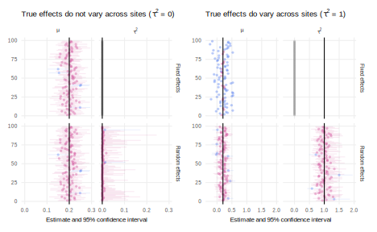

library(metafor)
#> Loading required package: Matrix
#>
#> Attaching package: 'Matrix'
#> The following objects are masked from 'package:tidyr':
#>
#> expand, pack, unpack
#> Loading required package: metadat
#>
#> Loading the 'metafor' package (version 3.4-0). For an
#> introduction to the package please type: help(metafor)
mu <- 0.2 # true PATE
tau <- 0.0 # true SD of site-level ATEs
design <-
declare_model(
N = 200,
site = 1:N,
std.error = pmax(0.1, abs(rnorm(N, mean = 0.8, sd = 0.5))),
theta = rnorm(N, mean = mu, sd = tau), # when tau = 0, theta = mu
estimate = rnorm(N, mean = theta, sd = std.error)
) +
declare_inquiry(mu = mu, tau_sq = tau^2) +
declare_estimator(
yi = estimate, sei = std.error, method = "REML",
.method = rma_helper, .summary = rma_mu_tau,
term = c("mu", "tau_sq"), inquiry = c("mu", "tau_sq"),
label = "random-effects") +
declare_estimator(
yi = estimate, sei = std.error, method = "FE",
.method = rma_helper, .summary = rma_mu_tau,
term = c("mu", "tau_sq"), inquiry = c("mu", "tau_sq"),
label = "fixed-effects")
declaration_19.3 <- redesign(design, tau = c(0, 1))Meta-analysis
We declare a design for meta-analytic study in which a researcher seeks to combine findings from a collection of existing studies to form an overall conclusion. Declaration helps clarify the estimand in such studies. Diagnosis highlights risks associated with a common estimator used in meta-analysis, the fixed effect estimator.
In a meta-analysis, inquiries are typically population-level quantities like the population average treatment effect (PATE). The relevant population might be the full set of units that happened to participate in past research studies or it might be a broader population, like all human adults since 1950. The data strategy for a meta-analysis involves collecting all (or a subset) of the estimates generated by past research studies on the topic and standardizing them so they can be meaningfully compared or combined. Meta-analyses are valuable because they can tell us about the empirical consensus on a particular inquiry. Because they typically aggregate a large amount of information, meta-analyses are usually more precise than individual studies. We can also learn what we don’t know from a meta-analysis. After aggregating all the available evidence on a given inquiry, we may find that we don’t know very much at all.
The PATE inquiry, however, might not be so interesting if the constituent inquiries – the site-level ATEs – vary greatly from context to context. The ATEs that make up the PATE might vary because of the contextual features that condition the effect. Galos and Coppock (2022), for example, reanalyze audit studies of gender-based employment discrimination to find that the ATE on callbacks of being a woman is strongly positive in women-dominated sectors and is strongly negative in men dominated sections. For this reason, meta-analyses often include inquiries about the variance of effects across studies or the covariance of effects with groups.1
The largest choice in the data strategy for a meta-analysis is the set of study inclusion and exclusion criteria. These criteria should be guided by the inquiries of the meta-analysis and whether the designs of the constituent studies appropriately inform the meta-analytic inquiry. If the inquiry is the population mean and standard deviation of the site level ATEs of treatment \(Z\) on outcome \(Y\), we want to include only studies that credibly estimate the effect of \(Z\) on \(Y\). This requirement means checking that all included studies use similar-enough treatments and similar-enough measurements of the outcome. It also means excluding studies that are prone to bias. For example, Pettigrew and Tropp (2006) assemble 515 studies of the contact hypothesis, but Paluck, Green, and Green (2019) exclude all but 5% of these studies in their updated meta-analysis for failing to randomize intergroup contact. Meta-analyses that include biased studies can compound biases, giving us falsely precise and incorrect answers. Finally, inclusion decisions should be made on the basis of the designs of the constituent studies and not their results. For example, we should not exclude studies that fail to reach statistical significance or yield unexpected answers.
The answer strategies for meta-analysis often amount to a weighted average of the individual study estimates. We take a weighted average instead of a simple average because we want to give different studies different amounts of pull in the overall estimate. In particular, we want to give studies that are more precise more weight and studies that are less precise less weight. In fixed-effects estimation, for example, study weights are proportional to the inverse of the estimated variance from the study. In random-effects estimation, by contrast, the weights are proportional to the inverse of the estimated variance from the study, plus an estimate of the between-study variance in effects. With this adjustment, the study weights are less extreme in random effects relative to fixed effects (for more see Borenstein et al. 2021, ch. 13). Fixed-effects meta-analysis may be appropriate in settings in which we have a strong theoretical reason to think the site-level inquiries are all equal to the PATE, but typically, we think effects vary from site-to-site, so random effects is usually the meta-analytic answer strategy of choice.
In Declaration -1.1, we declare a meta-analytic research design for 100 studies with a true PATE (\(\mu\)) of 0.2. We represent the standard deviation of the study-level ATEs with \(\tau\), which we vary between 0 and 1. When \(\tau>0\) the true effects vary across contexts. The studies each have different measurement precision, with standard errors between 0.025 and 0.6. The inquiries are \(\mu\) and \(\tau^2\). In the answer strategy, we use both fixed and random effects meta-analysis.
Declaration -1.1 (Meta-analysis design)
Diagnosis -1.1 (Meta-analysis diagnosis) Figure -1.1 explores the bias and coverage of the two estimators under each model both for the mean effects inquiry \(\mu\) and for the variance of effects inquiry \(\tau^2\). We find that the random effects estimator, across both models of how effects are realized, performs best. Whether the variance of site-level ATEs is 1 or 0, random effects estimates both inquiries without bias and coverage is nominal. By contrast, the fixed effect estimator has two problems. When \(\tau^2\) is 1, the estimator gets the variance in estimates wrong, because it assumes it is zero. Second, the estimator is extremely overconfident, generating confidence intervals that are drastically too small, as reflected in the poor coverage. This overconfidence stems from the fixed-effect assumption that the only reason study-to-study estimates differ is due to estimation noise, not true differences across sites.
diagnosis_19.3 <- diagnose_design(declaration_19.3)
Design examples
Blair, Christensen, and Rudkin (2021) meta-analyze 46 difference-in-difference studies of the effects of commodity price shocks on conflict, excluding over 300 studies of the same effect that relied on weaker identification strategies.
Schwarz and Coppock (2022) collect 67 candidate choice conjoint experiments that randomized candidate gender to estimate the average effect of gender on electoral support.
Not all variation in estimates across sites is due to differences in true effects. Different studies employ different data strategies, so some differences in the treatments and outcomes are inevitable. If the differences across studies grow too large, meta-analysis on the full set of studies becomes inappropriate.↩︎